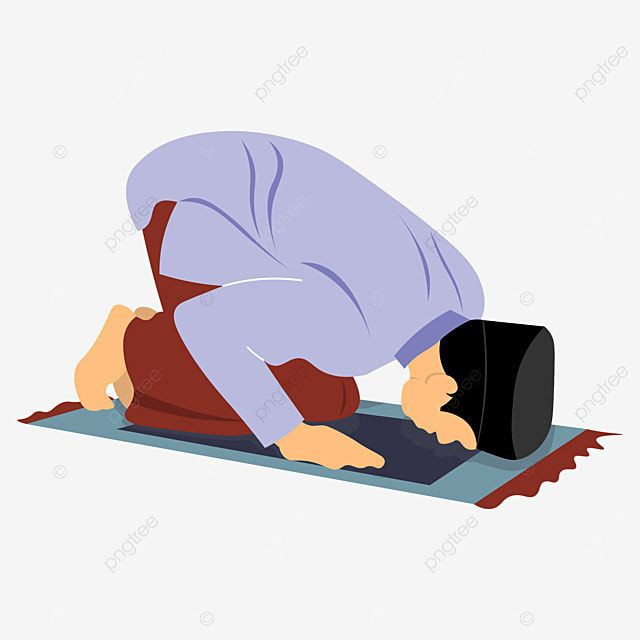

Assalamualaikum teman teman, apakah kalian tau? ternyata ada dosa yg masih banyak dilakukan oleh orang orang di zaman sekaran yg padahal dosa tersebut lebih berat daripada dosa minum minuman keras, zina, mencuri, atau membunuh sekalipun. Dosa tersebut adalah dosa meninggalkan sholat wajib atau sholat 5 waktu
Dari Jabir bin ‘Abdillah, Rasulullah shallallahu ‘alaihi wa sallam bersabda,
بَيْنَ الرَّجُلِ وَبَيْنَ الشِّرْكِ وَالْكُفْرِ تَرْكُ الصَّلاَةِ
“Pembatas (pembeda) antara seorang muslim dan kesyirikan serta kekafiran adalah meninggalkan shalat.” (HR. Muslim no. 257)Buraidah bin Al Hushoib Al Aslamiy berkata,”Aku mendengar Rasulullah shallallahu ‘alaihi wa sallam bersabda,
الْعَهْدُ الَّذِى بَيْنَنَا وَبَيْنَهُمُ الصَّلاَةُ فَمَنْ تَرَكَهَا فَقَدْ كَفَرَ
“Perjanjian antara kami dan mereka (orang kafir) adalah shalat. Barangsiapa meninggalkannya maka dia telah kafir.” (HR. Ahmad, Tirmidzi, An Nasa’i, Ibnu Majah)42. “Apa yang menyebabkan kamu masuk ke dalam (neraka) Saqar?”
43. Mereka menjawab, “Dahulu kami tidak termasuk orang-orang yang melaksanakan salat
QS. Al-Muddatstsir ayat 42-43
Dalam hadist di atas nabi Muhammad mengatakan bahwa orang yang meninggalkan sholat adalah kafir, disitu disebutkan bahwa yg membedakan antara orang kafir dan orang beriman adalah sholatnya. Dalam QS. Al-Muddatstsir ayat 42-43 juga disebutkan bahwa orang yang meninggalkansholat akan ditempatkan di neraka Saqar
Dalam pembahasan ini, ditekankan bahwa meninggalkan sholat wajib atau sholat lima waktu adalah dosa yang sangat berat, bahkan lebih serius daripada dosa besar lainnya seperti minum minuman keras, zina, atau mencuri. Hadis Nabi Muhammad ﷺ menegaskan bahwa perbedaan utama antara seorang Muslim dan orang kafir adalah pelaksanaan sholat. Selain itu, ayat Al-Qur'an juga menunjukkan bahwa mereka yang tidak melaksanakan sholat akan mendapatkan siksaan di neraka. Oleh karena itu, penting bagi setiap Muslim untuk menjaga sholat sebagai salah satu pilar utama dalam iman dan amal ibadah.
Baca juga tentang Hakikat Sholat agar lebih mengerti tentang kewajiban sholat